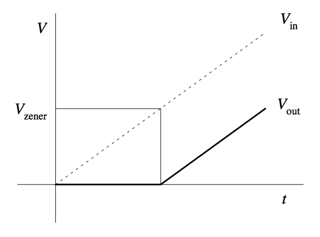
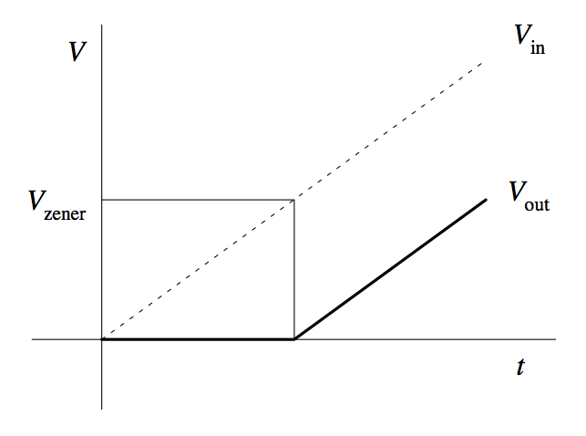
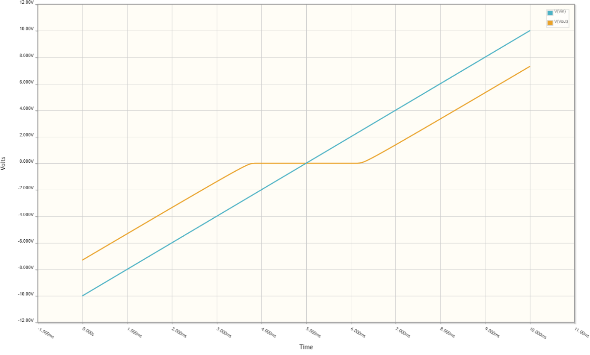
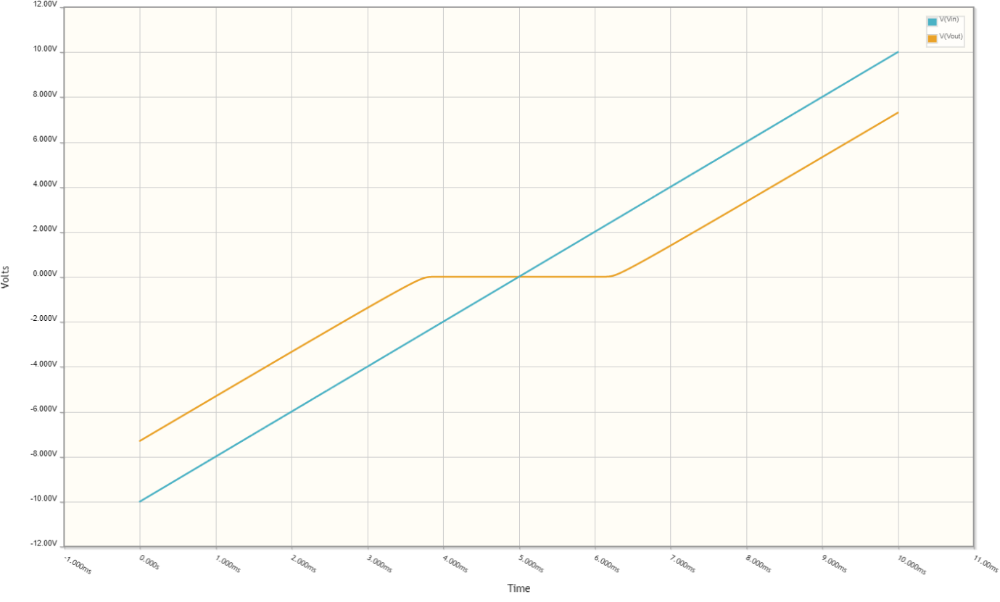

This article is part of my series of projects around Ternary Computing and Processor Design. Click here to see the list of projects of this series.
In the previous article, I explained how I designed the PCBs for each gate. After soldering the components, I tested if they worked properly. The inverter, the four basic gates and the MUL gate work but not the more complex SUM gate : when one of the inputs is 0, the output is not correct. To investigate this, I probed the PCB at different pins.
I believe the problem stems from the issue with the neutral output state : the output voltage isn’t really 0 and when used as input for another gate, it is amplified slightly and after a few gates in series, the neutral state is either positive or negative.
To visualize this phenomenon, here is the measurements I made in the first article about using CMOS pairs and the CD4007 chip. I measured the output voltage of a single CMOS pair (NOT gate) by sweeping the input voltage on the whole range of the supply voltages.
horizontal : input voltage ; vertical : output voltage
Not only there is a bias towards negatove voltage, but also the neutral state (for an input of 0) is on a slope, making it unstable. Note that my power supply can't produce voltages bellow 1.25V on either rail so this is an extrapolation.
For the bias, I first assumed this was due to the resistors used to stabilize the output being only 5% accuracy and creating a bias on one side. However, swapping the resistors didn’t affect this behavior. Therefore, it is a consequence of the differences between NMOS and PMOS transistors. Compensating the negative bias of the CMOS pair with a positive bias of the power supply solved this first issue, but not the second issue : the unstable state.
I thought about mutliple solutions, using pull-down resistors, operational amplifiers, etc. After experimenting with diodes, I found the best solution by using a special type of diodes : Zener diodes, that have a controlled reverse current flow threshold voltage called the Zener voltage. With a pull-down resistor and a Zener diode, we can create a voltage shifter with a value depending on the Zener voltage of the diode :
 

Zener diode voltage shifter
We can use this circuit on the output of each gate (which isn’t unreasonable as the Zener diode is a very simple semiconductor device) to create a flat neutral level. I simulated this circuit with two diodes for both directions using the online circuit simulator CircuitLab.
 

Symetrical voltage shifter
As we can see, this created a nice flat stable neutral state. The value of the Zener diode controls the width of the level. A pull-down resistor with a larger value makes the level thiner but this effect is minimal, a 100k resistor is sufficient. However, the voltage is also reduced outside this flat state, therefore there is a trade-off between neutral state width and voltage drop of the other levels. If the voltage drop is too large, the positive and negative states might not have the required voltage to activate the CMOS correctly.
That is why I wanted Zener diodes with the smallest value possible. The Amazon Zener diode kit I had bought only went down to 3.3V. I use Farnell to buy electronic components and need them delievered quickly, and the smallest value of Zener diode they had in THT component (easier to assemble by hand) was 2.4V. The only place I could find a lower value was on eBay : 2.0V from China. Buing on eBay is cheaper but it takes a very long time to arrive. I tried with the 3.3V and 2.4V anyway and built the voltage shifters on the output of a NOT gate to do the same measurements as above.
horizontal : input voltage ; vertical : output voltages
Zener diodes voltage : left : 3.3V ; right : 2.4V
As we can see, the smaller the Zener voltage of the diode, the narrower the neutral state is and the less the other two states are affected. But the effect was still too large. I realised a single zener diode would still work as we can move it by tweaking the supply voltage bias. I also tried to increase the supply voltage (as the CD4007 can work up to 15V). For this I had to order a higher voltage center-tapped transformer.
horizontal : input voltage ; vertical : output voltage
Single 2.4V Zener diode
Power supply : left : -5V +5.7V ; right : -9V +10V
Surprisingly to me, the neutral state is actually wider at higher voltage. I'm not quite sure why that is. Also note that the limitations of my power supply make it impossible to measure the output for low voltages, meaning we don't actually see the flat state on this graph, but we can guess it is present looking at the slope. That looks good enough.
To see if that worked, I had to create a bigger circuit with the diodes and pull-down resistors. So, I had to redesign all my PCBs. As I hadn't finished the measurements, I designed versions with two diodes and one diodes. I only ordered panel of the basic gates (NOT, NAND, NOR, NCONS, NANY). Here are the layouts and the PCBs.
EasyEDA is down (as always...) so I can't take the screenshots now
Dual diode panel ; left:front side ; right:back side
EasyEDA is down (as always...) so I can't take the screenshots now
Single diode panel ; left:front side ; right:back side
The finished PCBs
I then soldered enough to build a SUM gate, tested each gate to make sure I didn't miss a connection while routing every pad manually (one day I will accept autorouting), and finaly built the SUM gate by wirering the simpler gates. Then, with great anticipation, I turned the power supply on, attached the alligator clips of the mutlimeter to ground and the output, plugged the switches, and tested the SUM gate :
This was so satisfying. I will now design and order the PCBs of the full SUM gate (because using all those individual gates isn't very elegant or practical) as well as for the MUL gate, and when I recieve them, I should finally be able to assemble the ternary ALU. Let's hope nothing goes wrong.
The future of this project
I recently took a Udacity course on High Performance Computer Architecture, the first actual course I took about processor architecture as, until then, I was learning everything on the fly by reading papers and Wikipedia articles. This course is great, free and made by the school I am currently at : Georgia Tech (I'm on the European campus right now and this course was not available here). If you are interested by this topic, I highly recommend that you check out this course.
I find it so fascinating and I learnt so much. I can't wait to put everything into practice by building the rest of the ternary computer architecture. I had started last year while working on TelociDesi, but now I will be able to go much deeper in the topic. I will first need to build the other necessary components of a processor : registers, memory, control unit, etc. I then plan to create mutliple architectures, in TelociDesi simulations and physically using the CMOS gates, incremently implementing features such as OISC and RISC instruction sets, compiler design and assembly code, pipelining, branch prediction, instruction parallelism and scheduling, cache, advanced ALU and fast multiplication, floating point operations, multi-processing, compex IO and interfacing with peripherals, and who knows what else ! This is a very long term project, but there is so much to do, and this is almost uncharted teritory ; I don't think such complex ternary computers have existed since the soviet Setun. This is so exciting !
This article is part of my series of projects around Ternary Computing and Processor Design. Click here to see the list of projects of this series.
Go back to the list of projects